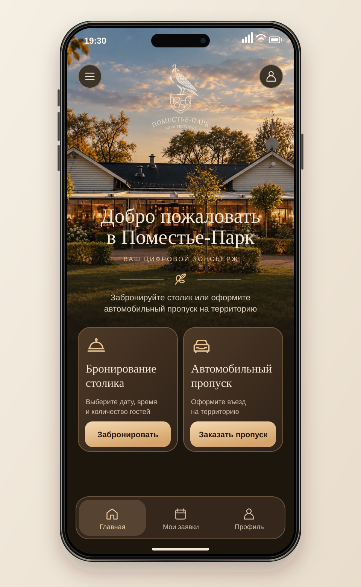
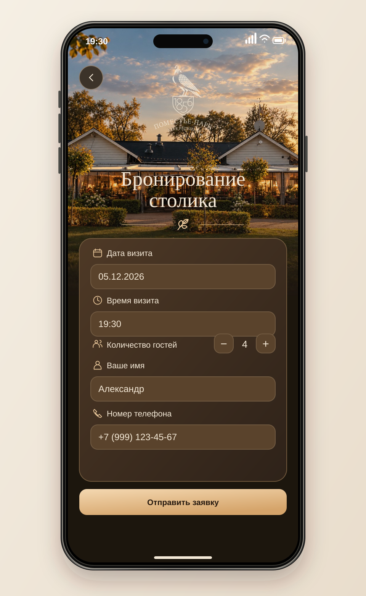

Telegram Mini App · Москва
Поместье-Парк
Цифровой консьерж ресторана
задача
Создать удобный цифровой сервис для гостей ресторана: объединить бронирование столиков, оформление автомобильных пропусков и отслеживание статуса заявок в одном мини-приложении Telegram.
Упростить обработку заявок для администраторов и сохранить премиальный визуальный стиль ресторана.



решение
Разработали Telegram Mini App с фирменным интерфейсом, мобильной адаптацией и единым личным кабинетом гостя.
- Бронирование столика с выбором даты, времени и количества гостей.
- Оформление автомобильного пропуска.
- История заявок и автоматические уведомления об изменении статуса.
- Отдельный бот для администраторов с синхронизацией решений по заявкам.
результат
Запущено единое мини-приложение для гостей ресторана. Заявки поступают всем подключённым администраторам; после решения одного сотрудника статус обновляется у остальных и гость получает уведомление.
Цифровой консьерж доступен непосредственно в Telegram, без установки отдельного приложения.
открыть приложение ↗